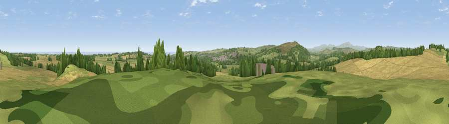

Viewpoint near Denwick
#5159 in England · top 25% of its area beats it · near DenwickThe view, rendered

A 360° render of this exact spot computed from the terrain model, tree cover and land cover — summer colours, afternoon light, calibrated against photographs of famous viewpoints. Real trees, hedges and buildings will differ in detail.
The panorama
Grey silhouette: terrain skyline in each direction (720 bearings, Earth curvature and refraction included). Dashed green: skyline with trees (+15 m) and buildings (+8 m) as obstacles. Blue strip: how far the ground is visible on each bearing.
Where the view opens
Wedge length = distance to the farthest visible ground on that bearing (vegetation-aware). Rings at 10, 25 and 50 km.
What fills the view
43% cropland · 37% grassland · 15% woodland · 3% water · 2% built-up
Angular shares of the visible panorama (visual magnitude), not map area. Landscape diversity 0.52 (0–1 Shannon).
Key numbers
More beautiful places nearby
The staircase of upgrades: each row has a higher view potential than everything closer. Driving times are estimates from straight-line distance, calibrated against real road routing — check an actual route before setting out.
| Place | Direction | Drive | Score |
|---|---|---|---|
| Viewpoint near Rennington | N · 1 km | ~4 min | 72.7 |
| Viewpoint near Alnwick | NW · 3 km | ~7 min | 73.9 |
| Viewpoint near Alnwick | SW · 4 km | ~9 min | 77.7 |
| Cloudy Crags | SW · 4 km | ~10 min | 80.2 |
| Viewpoint near Glanton | W · 10 km | ~19 min | 82.9 |
| Viewpoint near Eglingham | WNW · 12 km | ~23 min | 83.8 |
| Viewpoint near Chillingham | NW · 14 km | ~25 min | 88.1 |
| Viewpoint near Easington | SSE · 111 km | ~136 min | 90.2 |
55.43979, -1.71033 · source: screening · position refined by local search. Computed location — check access rights before visiting.